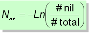
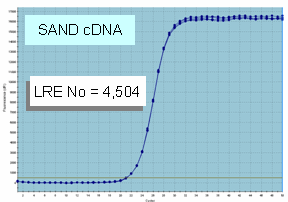
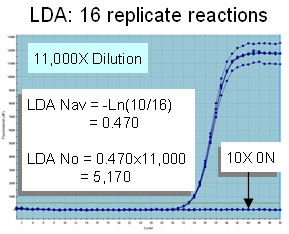

Poisson distribution provides a method for conducting absolute quantification that is independent of qPCR, which can be visually demonstrated using a graph that was introduced in the <10 Molecule Problem section:
This indicates that the frequency of zero molecule aliquots (denoted in yellow) is inversely dependent on target concentration. In terms of PCR amplification, this can be expressed mathematically by the equation:

where "#nil" is the number of amplification reactions that fail to produce an amplification profile (i.e. 0 N aliquots), "#total" is the total number of replicate reactions conducted and "Nav" is the target concentration. Thus, for a sample containing target quantities below 1 N/aliquot, the target concentration can be determined by conducting replicate amplification reactions and counting the number of nil reactions.
Of greater significance, conducting absolute quantification in this fashion is independent of the kinetic and optical parameters upon which real-time qPCR is based, in that it relies solely on the frequency of nil reactions. The only major requirements are that a sufficient number of cycles be conducted to ensure amplification of single target molecules, even under low amplification efficiency (typically 50 cycles is sufficient), and secondly, that those reactions that produce non-specific amplification products are either absent or can be identified (e.g. via melting curves).
Referred to as "limiting dilution assay" or LDA, this approach allows the quantitative accuracy of any qPCR assay to be assessed by simply diluting the target to about 0.7 molecules per aliquot and conducting 16-48 replicate reactions:

In this example LRE quantification predicted a target concentration of 4,504. Diluting the sample 11,000X and conducting 16 replicate reactions produced 10 nil reactions:

LDA predicts that the concentration of the target in the undiluted sample is 5,170 molecules per aliquot, which is a difference of about 15% from that derived from LRE quantification.
See Wang, Z. and Spadoro, J. (1998) In Ferré, F. (ed.), Gene Quantification. Birkhäuser, Boston, pp. 31-34 for additional details about how this approach was developed, including how the number of replicate reactions impacts the accuracy of the assay.
Note also that the third LRE overview video available on the LRE qPCR website (sites.google.com/site/lreqpcr) provides a detailed discussion of assessing quantitative accuracy.